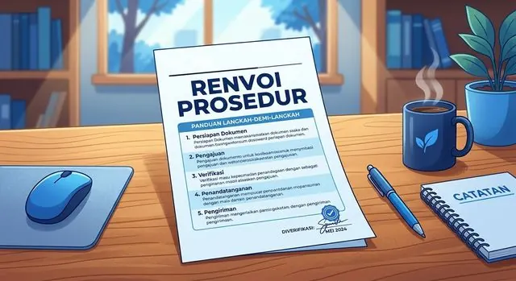

Artikel · KepailitanArticle · Bankruptcy
Renvoi Prosedur: Upaya Penyelesaian atas Jumlah Tagihan yang Tidak CocokRenvoi Procedure: Resolving Disputed Claim Amounts in Bankruptcy
Kapan keberatan diajukan, siapa yang berhak, mekanisme, upaya hukum, dan tindak lanjut Kurator.When to object, who may file, the procedure, legal remedies, and the curator's follow-up. (In Indonesian)